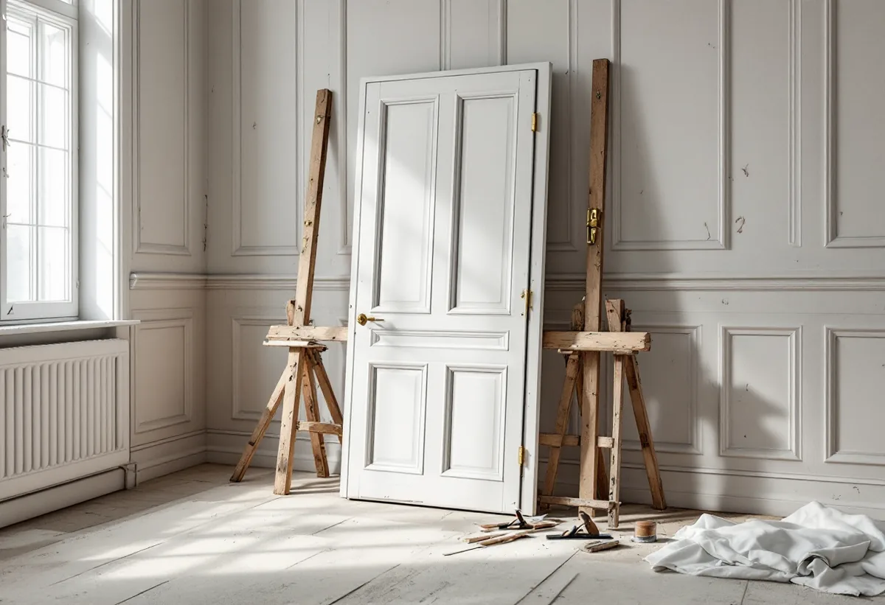
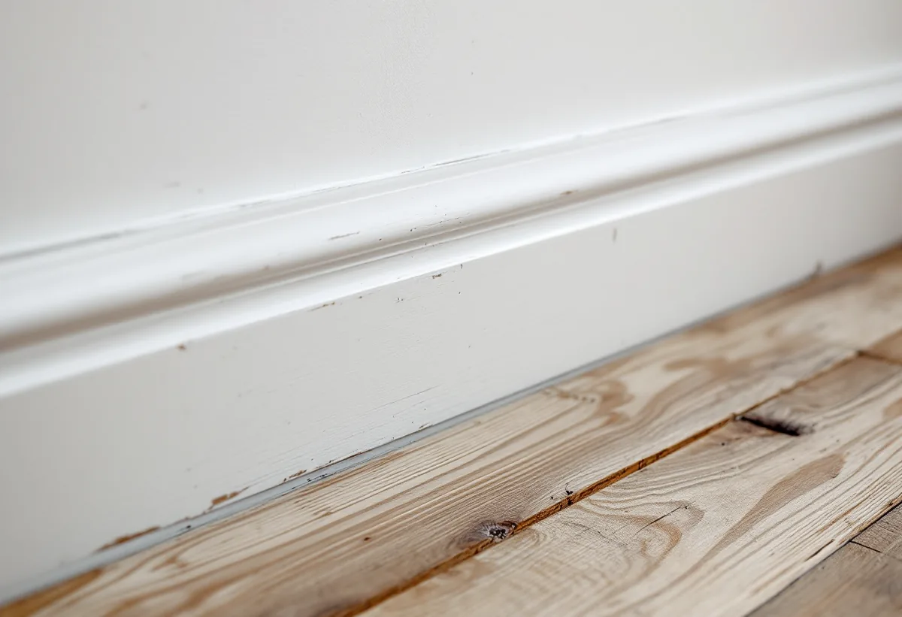

Besök
Gratis besök där vi går igenom dörrar, paneler och listverk.
I en våning på Östermalm är snickerierna ofta lika gamla som huset: spegeldörrar, paneler, foder och inbyggda skåp.
Beskriv jobbet kort.
Något blev fel. Kontrollera uppgifterna eller ring 08 12 410 276.
Vi tittar på jobbet på plats innan du får offert.
Du ser vad som ingår och vad det kostar.
Vi drar av ROT direkt och sköter ansökan.
Geal Entreprenad AB, Bromma. Org.nr 559303-7566.

De går oftast att laga, och det är oftast både billigare och bättre än att byta. Vi reparerar, kompletterar och bygger nytt där det behövs – och tar reda på om lägenhetens kulturvärden kräver styrelsens tillstånd först.
Stenstaden på Östermalm uppfördes till största delen under 1800-talets senare del och är, tillsammans med Norrmalm, den största samlade årsringen i stadens bebyggelse. I Hedvig Eleonora, ett av Östermalms statistikområden, fanns 2024 7 344 bostäder, varav 5 164 bostadsrätter.
Östermalm har också villaområden. Lärkstaden byggdes 1909–1918 med tegelhus och planterade förgårdar, och Diplomatstaden fick på 1910- och 1920-talen stora enfamiljshus runt Engelska kyrkan. I husen från den här tiden finns ofta originalsnickerier kvar.

En gammal spegeldörr i massivt trä som kärvar har oftast bara satt sig eller fått för många lager färg i kanten. Den kan justeras, hyvlas och få nya gångjärn eller ett nytt lås. En panel som har spruckit kan limmas och kompletteras med en bit i samma profil.
Vi tar ner det som behöver lagas, märker varje del och sätter tillbaka allt på samma plats. Saknas en list eller en panelbit tillverkas den efter den befintliga. Det nya ska inte synas när det är målat.
Bostadsrättslagen (7 kap. 7 §) säger att det alltid krävs styrelsens tillstånd för en åtgärd som påverkar en lägenhets särskilda historiska, kulturhistoriska, miljömässiga eller konstnärliga värden. Det gäller alltså även sådant som annars inte hade behövt något tillstånd.
Stadsmuseet klassar byggnader och miljöer, och staden skriver att den som äger en byggnad med särskilda kulturhistoriska värden kan behöva söka bygglov för åtgärder som annars är lovfria. Titta i Stadsmuseets klassificeringskarta och fråga styrelsen innan något originalsnickeri rivs.
Ska en ny garderob, bokhylla eller dörr in i en äldre våning försöker vi få den att höra ihop med det som finns: samma typ av foder runt, samma höjd på socklar och lister och en kulör som passar.
Ibland är det bättre att det nya syns som nytt – en enkel, väl utförd inredning som inte försöker härma. Det avgör du, men vi visar alternativen innan något tillverkas.
Staden beskriver villorna i Lärkstaden och Diplomatstaden som omsorgsfullt utformade, med stor omsorg i materialbehandlingen. Diplomatstaden skyddas genom miljöbalkens bestämmelser om nationalstadspark, och större delen av Lärkstaden omfattas av en detaljplan från 1952.
I en villa gäller samma princip som i en våning: laga det som finns, komplettera med samma profil och stäm av med staden innan något på husets utsida ändras. Inne i huset är det ägaren som bestämmer, så länge inga skyddsbestämmelser säger något annat.
Lagade dörrar, paneler och lister behöver i regel målas efteråt. Därför planerar vi arbetet så att snickeriet är klart innan målaren börjar, och lämnar ytorna rengjorda och spacklade där vi har lagat.
Har lägenheten flera lager gammal färg på dörrar och foder tar vi ner dem till en verkstad om det behövs, så att de kan justeras och lagas ordentligt. Delarna märks och kommer tillbaka till samma plats, med samma beslag om de går att återanvända. Vill du att målaren också ska ta hand om resten av lägenheten kan vi samordna det – läs mer om målare på Östermalm.
Gratis besök där vi går igenom dörrar, paneler och listverk.
Vi kollar Stadsmuseets karta och om styrelsens tillstånd behövs.
Delar fotograferas och märks innan de tas ner.
Justering, hyvling, limning och nya beslag.
Saknade delar tillverkas i samma profil.
Allt sätts tillbaka på sin plats, klart för målning.
Bor du i bostadsrätt ger arbete inne i lägenheten rotavdrag enligt Skatteverket, för det som du själv ansvarar för enligt stadgarna – väggar, golv, tak och fast inredning innanför lägenhetens gränser. Avdraget är 30 procent av arbetskostnaden, högst 50 000 kronor per person och år och högst 75 000 kronor tillsammans med rutavdrag. Material och resor ger inget avdrag. Geal drar avdraget direkt på fakturan.
I en villa ger arbetet rotavdrag när du äger och bor i huset.
Hur många dörrar och paneler som ska lagas, hur mycket som måste tillverkas nytt, om beslag ska bytas och om arbetet ska samordnas med målaren. Efter besöket får du ett skriftligt kostnadsförslag.
Altan, väggar, dörrar och inredning.
Snickare i Stockholm →Takbyte, takbesiktning och plåtarbeten.
Takläggare på Östermalm →Stenstad, Lärkstaden, Diplomatstaden och Gärdet.
Takrenovering på Östermalm →Kulturvärden, förvanskningsförbud och klassning.
Badrumsrenovering på Östermalm →Slå ihop två lägenheter.
Byggföretag på Östermalm →Husets ursprungliga kulör.
Fasadmålning på Östermalm →Gatufasad, gårdsfasad och lovfrågan.
Fasadrenovering på Östermalm →Stenstaden, Lärkstaden och villorna.
Fönsterbyte på Östermalm →Fönster och glas i Gärdets 1930-talshus.
Fönsterrenovering på Östermalm →Mönsterparkett, lack och olja.
Golvläggare på Östermalm →Slipa om eller underhålla lackade golv.
Golvslipning på Östermalm →Stora lägenheter och kulturvärden.
Köksrenovering på Östermalm →Limfärg i taken, dekor och lov.
Målare på Östermalm →Taklandskapet och balkongerna.
Plåtslagare på Östermalm →Nytt tak med taksäkerhet och snörasskydd.
Takbyte på Östermalm →Klassade våningar och bostadsrätt.
Tapetsering på Östermalm →Renovera hela lägenheten.
Totalrenovering på Östermalm →Eller ring 08 12 410 276, mån–fre 08–17.
Beskriv jobbet kort.
Något blev fel. Kontrollera uppgifterna eller ring 08 12 410 276.